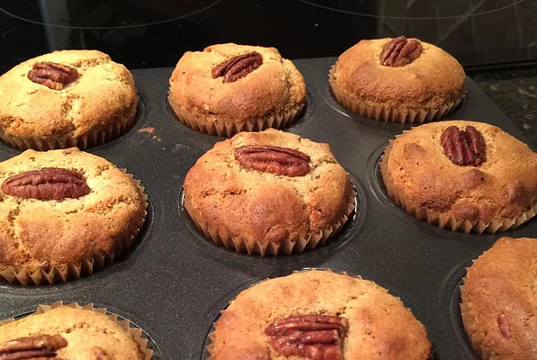

Maple Pecan Muffins

Description
A super moist, easy, and healthy muffin recipe that will
satisfy all ages and especially those with allergies or
lifestyles that are gluten-free, dairy-free, or vegan.
Ingredients
- 9 tablespoons water
- 3 tablespoons flax seed meal
- 1 ¼ cups gluten-free all-purpose flour
- 3 tablespoons chopped pecans
- 2 tablespoons coconut flour
- 1 teaspoon baking soda
- 1 teaspoon baking powder
- ¼ teaspoon salt
- ½ cup maple syrup
- 3 tablespoons coconut oil
- 1 teaspoon vanilla extract